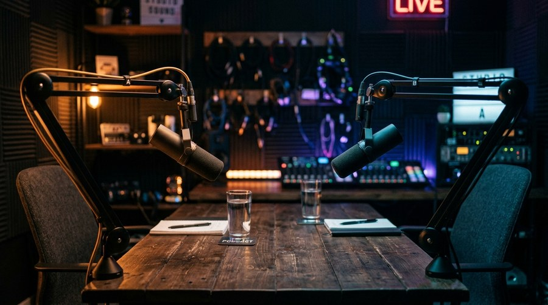

Podcast and talking-head channels face a unique thumbnail challenge: the primary visual asset — two people talking — is inherently low-action and visually similar across episodes. Every thumbnail risks looking like every other thumbnail from the same channel, and every thumbnail risks looking like every other podcast thumbnail in the niche. This guide covers the approaches that break through that sameness.
A conversation is not inherently visual. Unlike gaming (you can show in-game action), fitness (you can show a transformation), or education (you can show a result), a podcast's "product" is words and ideas. The thumbnail cannot show the conversation itself — it has to represent what the conversation reveals or implies. This requires a fundamentally different creative approach than most other YouTube content types.
When your guest is recognizable to your audience — a public figure, an industry expert, a fellow creator — lead with their face, not yours. The guest's recognition value is your primary CTR driver. Place the guest's face on the dominant third of the frame, with your face (or just your channel's visual identity) in a secondary position. Text should name the guest or tease the most surprising thing they revealed — not describe the episode generically.
One of the most underused podcast thumbnail formats is the quote thumbnail: a single provocative, specific, or surprising statement pulled from the episode, displayed as large text against a clean or minimalist background. "I Lost Everything Twice" over a portrait of the guest is more compelling than a generic two-person interview photo. The quote creates an immediate curiosity gap — who said this? what is the context? — that drives clicks from viewers who don't recognize the guest.
Podcast channels often create a recognizable thumbnail template — same layout, same font, same brand colors — that creates channel recognition at the cost of individual episode differentiation. The solution is to vary one element per episode: background color, guest expression, or quote text. A consistent structure with variable color coding (blue episodes vs. red episodes vs. green episodes) lets returning viewers recognize the channel while giving each episode a visually distinct identity.
Solo talking-head episodes require the host to carry the entire visual load. In this case, use the expression and composition to represent the episode's emotional register. A serious, direct expression for a thoughtful long-form episode. A slightly surprised or raised-eyebrow expression for a counterintuitive take. A confident, forward-leaning posture for a motivational episode. The expression should preview the emotional experience of watching — not necessarily the content topic.
Download thumbnails from any podcast or interview channel with Thumbnail Swiper and identify the patterns that drive their highest-performing episodes.
Try Thumbnail Swiper →